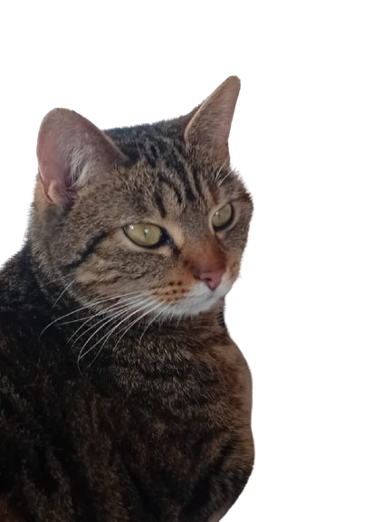
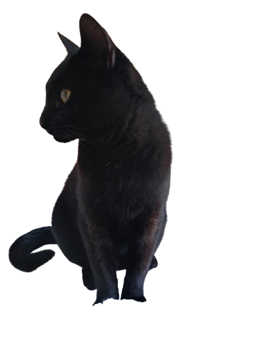
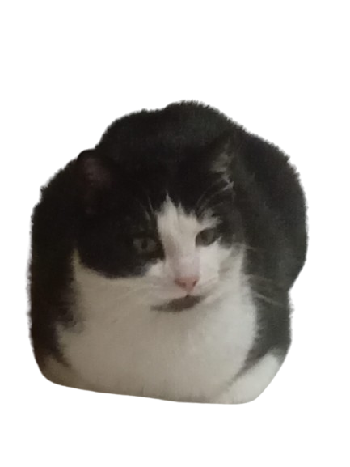
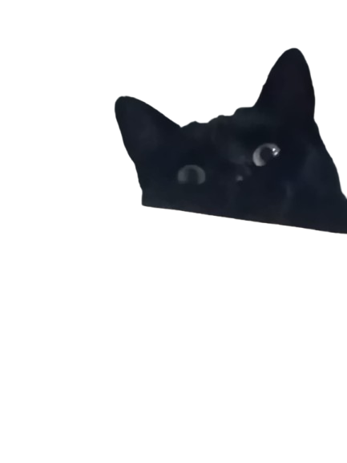
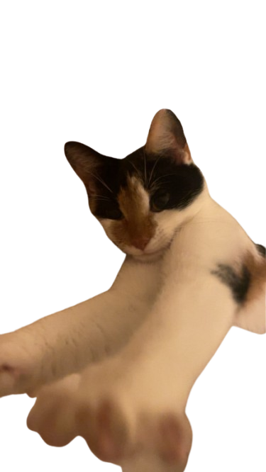

Get to know my adorable cats(and dog)!
This is Ollie aka kangaroo, a 2 year old boerenfox-mix. I got him when he was around 3-4 months and had him untill a few weeks ago. He was a really fun and sweet dog to have, we'd call him kangaroo because he could jump REALLY high. But apart from that he was really sweet and loved attention. Sadly he was sold, but he went the best place he could get and I'm really happy for him.

This is Luna, a 2 year old cat. I got her around a year ago and fun fact: she was pregnant when I got her and she got 4 kittens! Luna is an absolute diva, she loves attention but sometimes you gotta leave her alone or else you'll get a smack in the face. She loves to sleep all day and steal the bag of treats and eat them all.

This is coco a 4 year old cat. I got him when he was 6 months old. He is the OG and biggest one I have, he looks like a black panther and thinks he's the boss in the house. He is the first cat I got, most of the time he's outside and if he's inside he's probably eating all the cucumber.

This is Athena, a 1,5 year old cat. I got her when she was 9 months old. After 1 week of having her she broke out of the house and returned after a few weeks. After 3 weeks we noticed that she was also pregnant just like Luna. She got 4 kittens as well and we still have one of her babies! Athena is a very chill cat, she accepts everything and is most of the time eating or asleep she doesn't like Luna at all and is best friends with Pangga.

This is Pangga, a 1 year old cat. I got her when she was 6 months old. She was very scared and slightly traumatized when I got her, but after some time Athena and her were together all the time and she got more confident. She is the sweetest cat ever and has really soft fur. She loves to come up to you and ask for attention.

This is Kiki, a 7 month old kitty. She is my sisters cat and is the baby of Athena ! She is a very sweet cat and loves to run around and playing with whatever she sees. She also loves to cuddle and get attention from people.